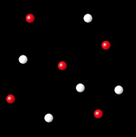
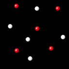

Equilibrio E1c


Al pulsar en cada una de las siguientes figuras se observará una animación que describe una reacción entre átomos del elemento A (rojos) y del elemento B (blanco) para formar moléculas del compuesto AB.
|  |  |
Después de observar las dos animaciones indica cual de ellas representa mejor los cambios que tienen lugar en una reacción reversible.
Correcto. En esta animación se puede observar que se forman
moléculas AB (reacción directa) al mismo tiempo que tiene lugar la reacción inversa de disociación de moléculas para formar los
átomos de partida.
|
|
Incorrecto. La animación muestra solo la formación de moléculas
AB, (reacción directa), pero no la reacción inversa de disociación de moléculas AB para formar los
átomos.
|